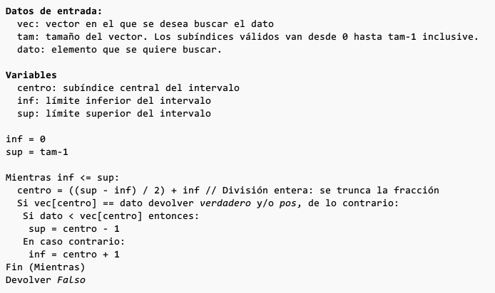
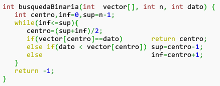
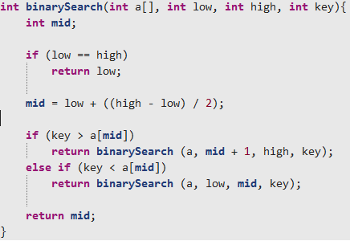

Busqueda Binaria
Es un método que se basa en la división sucesiva del espacio ocupado por el vector en sucesivas mitades, hasta encontrar el elemento buscado.
Esta búsqueda utiliza un método de “divide y vencerás” para localizar el valor deseado. Con este método se examina primero el elemento central de la lista; si este es el elemento buscado entonces la búsqueda ha terminado. En caso contrario se determina si el elemento buscado está en la primera o segunda mitad de la lista y a continuación se repite el proceso anterior, utilizando el elemento central de esta sublista.
Este tipo de búsqueda se utiliza en vectores ordenados.
Este algoritmo reduce el tiempo de búsqueda considerablemente, ya que disminuye exponencialmente el número de iteraciones necesarias.
Está altamente recomendado para buscar en arrays de gran tamaño. Por ejemplo, en uno conteniendo 50.000.000 elementos, realiza como máximo 26 comparaciones (en el peor de los casos).
Pseudocodigo

Busqueda Binaria en C

Busqueda Binaria Recursiva en C
